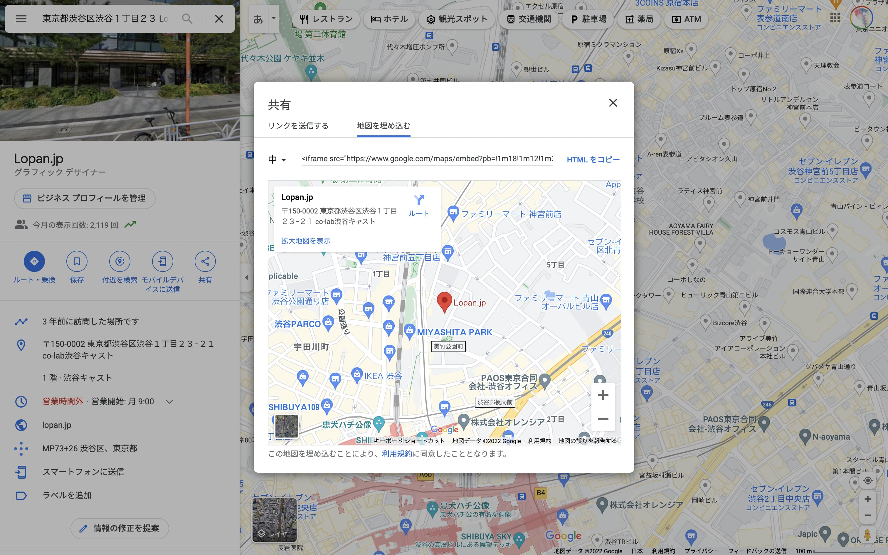

Works
地図を埋め込む
Googleの検索結果で「共有」を選択して「地図を埋め込む」の「HTML をコピー」したものをペーストした結果。
<iframe src="https://www.google.com/maps/embed?pb=!1m18!1m12!1m3!1d3241.5837490032973!2d139.70084081556627!3d35.662625838598835!2m3!1f0!2f0!3f0!3m2!1i1024!2i768!4f13.1!3m3!1m2!1s0x60188cac05404a1b%3A0xe7e4267bc5d3e90a!2sLopan.jp!5e0!3m2!1sja!2sjp!4v1662125872242!5m2!1sja!2sjp" width="600" height="450" style="border:0;" allowfullscreen="" loading="lazy" referrerpolicy="no-referrer-when-downgrade" class="p-map"></iframe>
コピペした後、要素の最後にclass="p-map"を追記して、以下のCSSを適用している。
.p-map {
width: 100%;
height: 400px;
margin-block: 24px;
border-radius: 8px;
}

「リンクを送信する」の「リンクをコピー」から、Google マップ（アプリ）で閲覧できるURLも得られる。
Google マップで見る
<a href="https://goo.gl/maps/m7ge93u5UEcZ9ycg8" class="c-button" rel="noopener">Google マップで見る</a>
地図を載せたいだけならばこれで十分。ただし、Google のユーザー情報が載るし、見た目のカスタマイズはできない。
Maps JavaScript API
Google Maps JavaScript APIを使ってサイトに地図を生成する方法。
埋め込みと違い、iframeではなくサイトに直接Google マップを生成している。ここでは、Google マップ上のデフォルトのUIを非表示にして、ズームコントロールだけ表示している。
head要素内にscript要素を使って、APIを読み込む。
APIを利用するために必要なAPI キーは、Google Cloud プラットフォームにて作成。
<script src="https://maps.googleapis.com/maps/api/js?key={API キー}" defer></script>
地図を表示したい場所に、任意のid属性を付けたdiv要素を設置。
<div id="googlemap" class="p-map"></div>
JavaScriptでgoogle.maps.Mapクラスを使ってGoogle マップを生成。オプションのdisableDefaultUI: trueがデフォルトのUIを非表示にする。
const latlng = { lat: 35.6625258, lng: 139.7028806 };
const map = new google.maps.Map(document.getElementById('googlemap'), {
name: 'lopan',
center: latlng,
zoom: 18,
disableDefaultUI: true, // デフォルトの UI を非表示にする
zoomControl: true // ズームコントロールだけ表示する
});
Mapクラスについて
詳しくはこちらを参照のこと
マーカーを追加する
上のマップの座標に、オリジナルのマーカーを設置したところ。
マーカーを設置するにはgoogle.maps.Markerクラスを使う。オプションのiconがなければデフォルトのマーカーが表示される。
const marker = new google.maps.Marker({
position: latlng,
title: 'Lopan.jp',
icon: {
url: 'marker.svg',
scaledSize: new google.maps.Size(60,70)
},
map: map
});
/* マーカーをクリックしたら中央に戻る処理 */
marker.addListener('click', () => {
map.panTo(latlng);
});
Markerクラスについて
詳しくはこちらを参照のこと
地図のスタイルを変える
マップの見た目をグレーに変更したところ。
マップのスタイルを変更するにはgoogle.maps.StyledMapTypeクラスを使う。
const styles = [{
"stylers": [{
"saturation": -100 // 彩度を無にする
}]
}];
const monoType = new google.maps.StyledMapType(styles, { name: 'MonoMap' });
map.mapTypes.set('mono', monoType);
map.setMapTypeId('mono');
stylesの値を調整してもう少しカスタマイズ。
文字情報を非表示にすることもできる（ここではズームコントロールも表示していない）。
const styles = [{
"elementType": "geometry",
"stylers": [{
"saturation": -50 // ジオメトリ (地形描画) の彩度を淡くする
}, {
"visibility": "simplified" // ジオメトリの表示をシンプル設定する
}]
},{
"elementType": "labels",
"stylers": [{
"visibility": "off" // ラベル (文字情報) を非表示にする
}]
}];
const simpleType = new google.maps.StyledMapType(styles, { name: 'SimpleMap' });
map.mapTypes.set('simple', simpleType);
map.setMapTypeId('simple');
StyledMapTypeクラスについて
詳しくはこちらを参照のこと